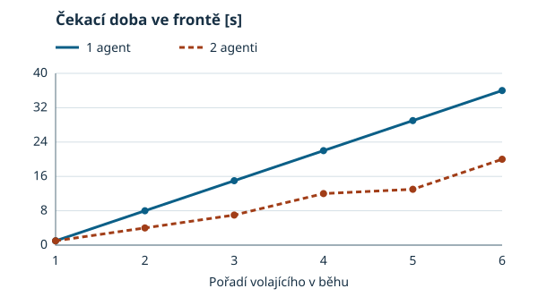

Dokončených hovorů: 144. Průměry a mediány zahrnují všechny dokončené hovory dané kombinace. Čekací doba ve frontě je první údaj za CONNECT (holdtime). Čas do spojení měříme od LABSTART. Asterisk zaznamenává časy v celých sekundách.
| Strategie | Agentů | Úrovně IVR | Hovorů | Fronta Ø [s] | Fronta medián [s] | Fronta max [s] | Před frontou Ø [s] | Do spojení Ø [s] | Přijal 101 | Přijal 102 |
|---|---|---|---|---|---|---|---|---|---|---|
| ringall | 1 | 1 | 12 | 18,5 | 18,5 | 36 | 2 | 20,5 | 12 | 0 |
| ringall | 1 | 2 | 12 | 18,5 | 18,5 | 36 | 4,5 | 23 | 12 | 0 |
| ringall | 2 | 1 | 12 | 9,5 | 9,5 | 20 | 2 | 11,5 | 6 | 6 |
| ringall | 2 | 2 | 12 | 9,5 | 9,5 | 20 | 5 | 14,5 | 6 | 6 |
| leastrecent | 1 | 1 | 12 | 18,5 | 18,5 | 36 | 2,5 | 21 | 12 | 0 |
| leastrecent | 1 | 2 | 12 | 18,5 | 18,5 | 36 | 5 | 23,5 | 12 | 0 |
| leastrecent | 2 | 1 | 12 | 9 | 9,0 | 19 | 2,5 | 11,5 | 6 | 6 |
| leastrecent | 2 | 2 | 12 | 9 | 9,0 | 19 | 5 | 14 | 6 | 6 |
| fewestcalls | 1 | 1 | 12 | 18,5 | 18,5 | 36 | 2,5 | 21 | 12 | 0 |
| fewestcalls | 1 | 2 | 12 | 18,5 | 18,5 | 36 | 5 | 23,5 | 12 | 0 |
| fewestcalls | 2 | 1 | 12 | 9 | 9,0 | 19 | 2 | 11 | 6 | 6 |
| fewestcalls | 2 | 2 | 12 | 9 | 9,0 | 19 | 4,5 | 13,5 | 6 | 6 |
Jednotlivé hovory (CSV) · Souhrn (CSV) · Parametry a verze · Souvislý log celé série

Běh 01_leastrecent_a2_ivr2_r1, ID 1795532336.1. Sloupce: čas Unix | ID hovoru | fronta | agent | událost | údaje události.
1795532336|1795532336.1|q600f13add2|NONE|LABSTART|702 1795532339|1795532336.1|q600f13add2|NONE|MENU1|1 1795532341|1795532336.1|q600f13add2|NONE|MENU2|2 1795532341|1795532336.1|q600f13add2|NONE|ENTERQUEUE|||1 1795532342|1795532336.1|q600f13add2|A101|CONNECT|1|1795532341.10|1 1795532349|1795532336.1|q600f13add2|A101|COMPLETEAGENT|1|7|1